This package contains example models to demonstrate the usage of package blocks.
Extends from Modelica.Icons.ExamplesPackage (Icon for packages containing runnable examples).
| Name | Description |
|---|---|
| PID_Controller | Demonstrates the usage of a Continuous.LimPID controller |
| Filter | Demonstrates the Continuous.Filter block with various options |
| FilterWithDifferentiation | Demonstrates the use of low pass filters to determine derivatives of filters |
| FilterWithRiseTime | Demonstrates to use the rise time instead of the cut-off frequency to define a filter |
| InverseModel | Demonstrates the construction of an inverse model |
| ShowLogicalSources | Demonstrates the usage of logical sources together with their diagram animation |
| LogicalNetwork1 | Demonstrates the usage of logical blocks |
| RealNetwork1 | Demonstrates the usage of blocks from Modelica.Blocks.Math |
| IntegerNetwork1 | Demonstrates the usage of blocks from Modelica.Blocks.MathInteger |
| BooleanNetwork1 | Demonstrates the usage of blocks from Modelica.Blocks.MathBoolean |
| Interaction1 | Demonstrates the usage of blocks from Modelica.Blocks.Interaction.Show |
| BusUsage | Demonstrates the usage of a signal bus |
| Utility models and connectors for example Modelica.Blocks.Examples.BusUsage |
 Modelica.Blocks.Examples.PID_Controller
Modelica.Blocks.Examples.PID_Controller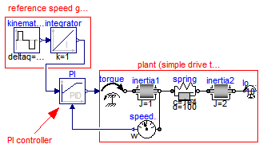
This is a simple drive train controlled by a PID controller:
The PI controller settings included "limitAtInit=false", in order that the controller output limits of 12 Nm are removed from the initialization problem.
The PI controller is initialized in steady state (initType=SteadyState) and the drive shall also be initialized in steady state. However, it is not possible to initialize "inertia1" in SteadyState, because "der(inertia1.phi)=inertia1.w=0" is an input to the PI controller that defines that the derivative of the integrator state is zero (= the same condition that was already defined by option SteadyState of the PI controller). Furthermore, one initial condition is missing, because the absolute position of inertia1 or inertia2 is not defined. The solution shown in this examples is to initialize the angle and the angular acceleration of "inertia1".
In the following figure, results of a typical simulation are shown:


In the upper figure the reference speed (= integrator.y) and the actual speed (= inertia1.w) are shown. As can be seen, the system initializes in steady state, since no transients are present. The inertia follows the reference speed quite good until the end of the constant speed phase. Then there is a deviation. In the lower figure the reason can be seen: The output of the controller (PI.y) is in its limits. The anti-windup compensation works reasonably, since the input to the limiter (PI.limiter.u) is forced back to its limit after a transient phase.
Extends from Modelica.Icons.Example (Icon for runnable examples).
| Type | Name | Default | Description |
|---|---|---|---|
| Angle | driveAngle | 1.57 | Reference distance to move [rad] |
model PID_Controller "Demonstrates the usage of a Continuous.LimPID controller" extends Modelica.Icons.Example; parameter Modelica.SIunits.Angle driveAngle=1.57 "Reference distance to move";Modelica.Blocks.Continuous.LimPID PI( k=100, Ti=0.1, yMax=12, Ni=0.1, initType=Modelica.Blocks.Types.Init.SteadyState, limitsAtInit=false, controllerType=Modelica.Blocks.Types.SimpleController.PI, Td=0.1); Modelica.Mechanics.Rotational.Components.Inertia inertia1( a(fixed=true), phi(fixed= true, start=0), J=1); Modelica.Mechanics.Rotational.Sources.Torque torque; Modelica.Mechanics.Rotational.Components.SpringDamper spring( c=1e4, d=100, stateSelect=StateSelect.prefer, w_rel(fixed=true)); Modelica.Mechanics.Rotational.Components.Inertia inertia2( J=2); Modelica.Blocks.Sources.KinematicPTP kinematicPTP(startTime=0.5, deltaq={ driveAngle}, qd_max={1}, qdd_max={1}); Modelica.Blocks.Continuous.Integrator integrator(initType=Modelica.Blocks. Types.Init.InitialState); Modelica.Mechanics.Rotational.Sensors.SpeedSensor speedSensor; Modelica.Mechanics.Rotational.Sources.ConstantTorque loadTorque( tau_constant=10, useSupport=false); initial equation der(spring.w_rel) = 0; equationconnect(spring.flange_b,inertia2. flange_a); connect(inertia1.flange_b, spring.flange_a); connect(torque.flange, inertia1.flange_a); connect(kinematicPTP.y[1], integrator.u); connect(speedSensor.flange, inertia1.flange_b); connect(loadTorque.flange, inertia2.flange_b); connect(PI.y, torque.tau); connect(speedSensor.w, PI.u_m); connect(integrator.y, PI.u_s); end PID_Controller;
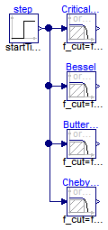
This example demonstrates various options of the Filter block. A step input starts at 0.1 s with an offset of 0.1, in order to demonstrate the initialization options. This step input drives 4 filter blocks that have identical parameters, with the only exception of the used analog filter type (CriticalDamping, Bessel, Butterworth, Chebyshev of type I). All the main options can be set via parameters and are then applied to all the 4 filters. The default setting uses low pass filters of order 3 with a cut-off frequency of 2 Hz resulting in the following outputs:

Extends from Modelica.Icons.Example (Icon for runnable examples).
| Type | Name | Default | Description |
|---|---|---|---|
| Integer | order | 3 | |
| Frequency | f_cut | 2 | [Hz] |
| FilterType | filterType | Modelica.Blocks.Types.Filter... | Type of filter (LowPass/HighPass) |
| Init | init | Modelica.Blocks.Types.Init.S... | Type of initialization (no init/steady state/initial state/initial output) |
| Boolean | normalized | true |
model Filter
"Demonstrates the Continuous.Filter block with various options"
extends Modelica.Icons.Example;
parameter Integer order = 3;
parameter Modelica.SIunits.Frequency f_cut = 2;
parameter Modelica.Blocks.Types.FilterType filterType=Modelica.Blocks.Types.FilterType.LowPass
"Type of filter (LowPass/HighPass)";
parameter Modelica.Blocks.Types.Init init=Modelica.Blocks.Types.Init.SteadyState
"Type of initialization (no init/steady state/initial state/initial output)";
parameter Boolean normalized = true;
Modelica.Blocks.Sources.Step step(startTime=0.1, offset=0.1);
Modelica.Blocks.Continuous.Filter CriticalDamping(
analogFilter=Modelica.Blocks.Types.AnalogFilter.CriticalDamping,
normalized=normalized,
init=init,
filterType=filterType,
order=order,
f_cut=f_cut,
f_min=0.8*f_cut);
Modelica.Blocks.Continuous.Filter Bessel(
normalized=normalized,
analogFilter=Modelica.Blocks.Types.AnalogFilter.Bessel,
init=init,
filterType=filterType,
order=order,
f_cut=f_cut,
f_min=0.8*f_cut);
Modelica.Blocks.Continuous.Filter Butterworth(
normalized=normalized,
analogFilter=Modelica.Blocks.Types.AnalogFilter.Butterworth,
init=init,
filterType=filterType,
order=order,
f_cut=f_cut,
f_min=0.8*f_cut);
Modelica.Blocks.Continuous.Filter ChebyshevI(
normalized=normalized,
analogFilter=Modelica.Blocks.Types.AnalogFilter.ChebyshevI,
init=init,
filterType=filterType,
order=order,
f_cut=f_cut,
f_min=0.8*f_cut);
equation
connect(step.y, CriticalDamping.u);
connect(step.y, Bessel.u);
connect(Butterworth.u, step.y);
connect(ChebyshevI.u, step.y);
end Filter;
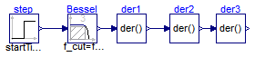
This example demonstrates that the output of the Filter block can be differentiated up to the order of the filter. This feature can be used in order to make an inverse model realizable or to "smooth" a potential discontinuous control signal.
Extends from Modelica.Icons.Example (Icon for runnable examples).
| Type | Name | Default | Description |
|---|---|---|---|
| Frequency | f_cut | 2 | [Hz] |
model FilterWithDifferentiation "Demonstrates the use of low pass filters to determine derivatives of filters" extends Modelica.Icons.Example; parameter Modelica.SIunits.Frequency f_cut = 2;Modelica.Blocks.Sources.Step step(startTime=0.1, offset=0.1); Modelica.Blocks.Continuous.Filter Bessel( f_cut=f_cut, filterType=Modelica.Blocks.Types.FilterType.LowPass, order=3, analogFilter=Modelica.Blocks.Types.AnalogFilter.Bessel); Continuous.Der der1; Continuous.Der der2; Continuous.Der der3; equationconnect(step.y, Bessel.u); connect(Bessel.y, der1.u); connect(der1.y, der2.u); connect(der2.y, der3.u); end FilterWithDifferentiation;
 Modelica.Blocks.Examples.FilterWithRiseTime
Modelica.Blocks.Examples.FilterWithRiseTime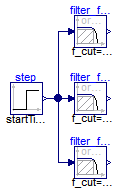
Filters are usually parameterized with the cut-off frequency. Sometimes, it is more meaningful to parameterize a filter with its rise time, i.e., the time it needs until the output reaches the end value of a step input. This is performed with the formula:
f_cut = fac/(2*pi*riseTime);
where "fac" is typically 3, 4, or 5. The following image shows the results of a simulation of this example model (riseTime = 2 s, fac=3, 4, and 5):

Since the step starts at 1 s, and the rise time is 2 s, the filter output y shall reach the value of 1 after 1+2=3 s. Depending on the factor "fac" this is reached with different precisions. This is summarized in the following table:
Filter order Factor fac Per centage of step value reached after rise time 1 3 95.1 % 1 4 98.2 % 1 5 99.3 % 2 3 94.7 % 2 4 98.6 % 2 5 99.6 %
Extends from Icons.Example (Icon for runnable examples).
| Type | Name | Default | Description |
|---|---|---|---|
| Integer | order | 2 | Filter order |
| Time | riseTime | 2 | Time to reach the step input [s] |
model FilterWithRiseTime "Demonstrates to use the rise time instead of the cut-off frequency to define a filter" extends Icons.Example; parameter Integer order=2 "Filter order"; parameter Modelica.SIunits.Time riseTime=2 "Time to reach the step input"; constant Real pi=Modelica.Constants.pi;Continuous.Filter filter_fac5(f_cut=5/(2*pi*riseTime), order=order); Sources.Step step(startTime=1); Continuous.Filter filter_fac4(f_cut=4/(2*pi*riseTime), order=order); Continuous.Filter filter_fac3(f_cut=3/(2*pi*riseTime), order=order); equationconnect(step.y, filter_fac5.u); connect(step.y, filter_fac4.u); connect(step.y, filter_fac3.u); end FilterWithRiseTime;
Modelica.Blocks.Examples.InverseModel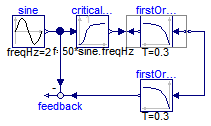
This example demonstrates how to construct an inverse model in Modelica (for more details see Looye, Thümmel, Kurze, Otter, Bals: Nonlinear Inverse Models for Control).
For a linear, single input, single output system
y = n(s)/d(s) * u // plant model
the inverse model is derived by simply exchanging the numerator and the denominator polynomial:
u = d(s)/n(s) * y // inverse plant model
If the denominator polynomial d(s) has a higher degree as the numerator polynomial n(s) (which is usually the case for plant models), then the inverse model is no longer proper, i.e., it is not causal. To avoid this, an approximate inverse model is constructed by adding a sufficient number of poles to the denominator of the inverse model. This can be interpreted as filtering the desired output signal y:
u = d(s)/(n(s)*f(s)) * y // inverse plant model with filtered y
With Modelica it is in principal possible to construct inverse models not only for linear but also for non-linear models and in particular for every Modelica model. The basic construction mechanism is explained at hand of this example:

Here the first order block "firstOrder1" shall be inverted. This is performed by connecting its inputs and outputs with an instance of block Modelica.Blocks.Math.InverseBlockConstraints. By this connection, the inputs and outputs are exchanged. The goal is to compute the input of the "firstOrder1" block so that its output follows a given sine signal. For this, the sine signal "sin" is first filtered with a "CriticalDamping" filter of order 1 and then the output of this filter is connected to the output of the "firstOrder1" block (via the InverseBlockConstraints block, since 2 outputs cannot be connected directly together in a block diagram).
In order to check the inversion, the computed input of "firstOrder1" is used as input in an identical block "firstOrder2". The output of "firstOrder2" should be the given "sine" function. The difference is constructed with the "feedback" block. Since the "sine" function is filtered, one cannot expect that this difference is zero. The higher the cut-off frequency of the filter, the closer is the agreement. A typical simulation result is shown in the next figure:

Extends from Modelica.Icons.Example (Icon for runnable examples).
model InverseModel "Demonstrates the construction of an inverse model" extends Modelica.Icons.Example;Continuous.FirstOrder firstOrder1( k=1, T=0.3, initType=Modelica.Blocks.Types.Init.SteadyState); Sources.Sine sine( freqHz=2, offset=1, startTime=0.2); Math.InverseBlockConstraints inverseBlockConstraints; Continuous.FirstOrder firstOrder2( k=1, T=0.3, initType=Modelica.Blocks.Types.Init.SteadyState); Math.Feedback feedback; Continuous.CriticalDamping criticalDamping(n=1, f=50*sine.freqHz); equationconnect(firstOrder1.y, inverseBlockConstraints.u2); connect(inverseBlockConstraints.y2, firstOrder1.u); connect(firstOrder2.y, feedback.u1); connect(sine.y, criticalDamping.u); connect(criticalDamping.y, inverseBlockConstraints.u1); connect(sine.y, feedback.u2); connect(inverseBlockConstraints.y1, firstOrder2.u); end InverseModel;
Modelica.Blocks.Examples.ShowLogicalSources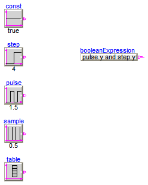
This simple example demonstrates the logical sources in Modelica.Blocks.Sources and demonstrate their diagram animation (see "small circle" close to the output connector). The "booleanExpression" source shows how a logical expression can be defined in its parameter menu refering to variables available on this level of the model.
Extends from Modelica.Icons.Example (Icon for runnable examples).
model ShowLogicalSources "Demonstrates the usage of logical sources together with their diagram animation" extends Modelica.Icons.Example;Sources.BooleanTable table(table={2,4,6,8}); Sources.BooleanConstant const; Sources.BooleanStep step(startTime=4); Sources.BooleanPulse pulse(period=1.5); Sources.SampleTrigger sample( period=0.5); Sources.BooleanExpression booleanExpression( y=pulse.y and step.y); end ShowLogicalSources;
Modelica.Blocks.Examples.LogicalNetwork1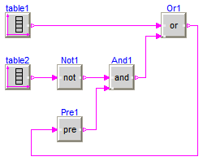
This example demonstrates a network of logical blocks. Note, that the Boolean values of the input and output signals are visualized in the diagram animation, by the small "circles" close to the connectors. If a "circle" is "white", the signal is false. It a "circle" is "green", the signal is true.
Extends from Modelica.Icons.Example (Icon for runnable examples).
model LogicalNetwork1 "Demonstrates the usage of logical blocks" extends Modelica.Icons.Example;Sources.BooleanTable table2(table={1,3,5,7}); Sources.BooleanTable table1(table={2,4,6,8}); Logical.Not Not1; Logical.And And1; Logical.Or Or1; Logical.Pre Pre1; equationconnect(table2.y, Not1.u); connect(And1.y, Or1.u2); connect(table1.y, Or1.u1); connect(Not1.y, And1.u1); connect(Pre1.y, And1.u2); connect(Or1.y, Pre1.u); end LogicalNetwork1;
Modelica.Blocks.Examples.RealNetwork1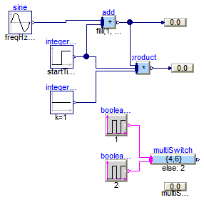
This example demonstrates a network of mathematical Real blocks. from package Modelica.Blocks.Math. Note, that
Extends from Modelica.Icons.Example (Icon for runnable examples).
model RealNetwork1 "Demonstrates the usage of blocks from Modelica.Blocks.Math" extends Modelica.Icons.Example;Modelica.Blocks.Math.MultiSum add(nu=2); Sources.Sine sine(amplitude=3, freqHz=0.1); Sources.Step integerStep(height=3, startTime=2); Sources.Constant integerConstant(k=1); Modelica.Blocks.Interaction.Show.RealValue showValue; Math.MultiProduct product(nu=3); Modelica.Blocks.Interaction.Show.RealValue showValue1(significantDigits=2); Sources.BooleanPulse booleanPulse1(period=1); Math.MultiSwitch multiSwitch( nu=2, expr={4,6}, y_default=2); Sources.BooleanPulse booleanPulse2(period=2, width=80); Modelica.Blocks.Interaction.Show.RealValue showValue3(use_numberPort=false, number=multiSwitch.y, significantDigits=1); equationconnect(booleanPulse1.y, multiSwitch.u[1]); connect(booleanPulse2.y, multiSwitch.u[2]); connect(sine.y, add.u[1]); connect(integerStep.y, add.u[2]); connect(add.y, showValue.numberPort); connect(add.y, product.u[1]); connect(integerStep.y, product.u[2]); connect(integerConstant.y, product.u[3]); connect(product.y, showValue1.numberPort); end RealNetwork1;
Modelica.Blocks.Examples.IntegerNetwork1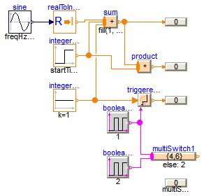
This example demonstrates a network of Integer blocks. from package Modelica.Blocks.MathInteger. Note, that
Extends from Modelica.Icons.Example (Icon for runnable examples).
model IntegerNetwork1 "Demonstrates the usage of blocks from Modelica.Blocks.MathInteger" extends Modelica.Icons.Example;MathInteger.Sum sum(nu=3); Sources.Sine sine(amplitude=3, freqHz=0.1); Math.RealToInteger realToInteger; Sources.IntegerStep integerStep(height=3, startTime=2); Sources.IntegerConstant integerConstant(k=1); Modelica.Blocks.Interaction.Show.IntegerValue showValue; MathInteger.Product product(nu=2); Modelica.Blocks.Interaction.Show.IntegerValue showValue1; MathInteger.TriggeredAdd triggeredAdd(use_reset=false, use_set=false); Sources.BooleanPulse booleanPulse1(period=1); Modelica.Blocks.Interaction.Show.IntegerValue showValue2; MathInteger.MultiSwitch multiSwitch1( nu=2, expr={4,6}, y_default=2, use_pre_as_default=false); Sources.BooleanPulse booleanPulse2(period=2, width=80); Modelica.Blocks.Interaction.Show.IntegerValue showValue3(use_numberPort=false, number=multiSwitch1.y); equationconnect(sine.y, realToInteger.u); connect(realToInteger.y, sum.u[1]); connect(integerStep.y, sum.u[2]); connect(integerConstant.y, sum.u[3]); connect(sum.y, showValue.numberPort); connect(sum.y, product.u[1]); connect(integerStep.y, product.u[2]); connect(product.y, showValue1.numberPort); connect(integerConstant.y, triggeredAdd.u); connect(booleanPulse1.y, triggeredAdd.trigger); connect(triggeredAdd.y, showValue2.numberPort); connect(booleanPulse1.y, multiSwitch1.u[1]); connect(booleanPulse2.y, multiSwitch1.u[2]); end IntegerNetwork1;
Modelica.Blocks.Examples.BooleanNetwork1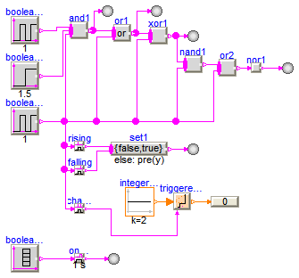
This example demonstrates a network of Boolean blocks from package Modelica.Blocks.MathBoolean. Note, that
Extends from Modelica.Icons.Example (Icon for runnable examples).
model BooleanNetwork1 "Demonstrates the usage of blocks from Modelica.Blocks.MathBoolean" extends Modelica.Icons.Example;Modelica.Blocks.Interaction.Show.BooleanValue showValue; MathBoolean.And and1(nu=3); Sources.BooleanPulse booleanPulse1(width=20, period=1); Sources.BooleanPulse booleanPulse2(period=1, width=80); Sources.BooleanStep booleanStep(startTime=1.5); MathBoolean.Or or1(nu=2); MathBoolean.Xor xor1(nu=2); Modelica.Blocks.Interaction.Show.BooleanValue showValue2; Modelica.Blocks.Interaction.Show.BooleanValue showValue3; MathBoolean.Nand nand1(nu=2); MathBoolean.Nor or2(nu=2); Modelica.Blocks.Interaction.Show.BooleanValue showValue4; MathBoolean.Not nor1; MathBoolean.OnDelay onDelay(delayTime=1); MathBoolean.RisingEdge rising; MathBoolean.MultiSwitch set1(nu=2, expr={false,true}); MathBoolean.FallingEdge falling; Sources.BooleanTable booleanTable(table={2,4,6,6.5,7,9,11}); MathBoolean.ChangingEdge changing; MathInteger.TriggeredAdd triggeredAdd; Sources.IntegerConstant integerConstant(k=2); Modelica.Blocks.Interaction.Show.IntegerValue showValue1; Modelica.Blocks.Interaction.Show.BooleanValue showValue5; Modelica.Blocks.Interaction.Show.BooleanValue showValue6; equationconnect(booleanPulse1.y, and1.u[1]); connect(booleanStep.y, and1.u[2]); connect(booleanPulse2.y, and1.u[3]); connect(and1.y, or1.u[1]); connect(booleanPulse2.y, or1.u[2]); connect(or1.y, xor1.u[1]); connect(booleanPulse2.y, xor1.u[2]); connect(and1.y, showValue.activePort); connect(or1.y, showValue2.activePort); connect(xor1.y, showValue3.activePort); connect(xor1.y, nand1.u[1]); connect(booleanPulse2.y, nand1.u[2]); connect(nand1.y, or2.u[1]); connect(booleanPulse2.y, or2.u[2]); connect(or2.y, nor1.u); connect(nor1.y, showValue4.activePort); connect(booleanPulse2.y, rising.u); connect(rising.y, set1.u[1]); connect(falling.y, set1.u[2]); connect(booleanPulse2.y, falling.u); connect(booleanTable.y, onDelay.u); connect(booleanPulse2.y, changing.u); connect(integerConstant.y, triggeredAdd.u); connect(changing.y, triggeredAdd.trigger); connect(triggeredAdd.y, showValue1.numberPort); connect(set1.y, showValue5.activePort); connect(onDelay.y, showValue6.activePort); end BooleanNetwork1;
Modelica.Blocks.Examples.Interaction1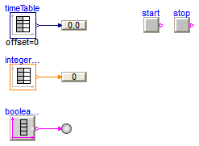
This example demonstrates a network of blocks from package Modelica.Blocks.Interaction to show how diagram animations can be constructed.
Extends from Modelica.Icons.Example (Icon for runnable examples).
model Interaction1 "Demonstrates the usage of blocks from Modelica.Blocks.Interaction.Show" extends Modelica.Icons.Example;Interaction.Show.IntegerValue integerValue; Sources.IntegerTable integerTable(table=[0,0; 1,2; 2,4; 3,6; 4,4; 6,2]); Sources.TimeTable timeTable(table=[0,0; 1,2.1; 2,4.2; 3,6.3; 4,4.2; 6,2.1; 6,2.1]); Interaction.Show.RealValue realValue; Sources.BooleanTable booleanTable(table={1,2,3,4,5,6,7,8,9}); Interaction.Show.BooleanValue booleanValue; Sources.RadioButtonSource start(buttonTimeTable={1,3}, reset={stop.on}); Sources.RadioButtonSource stop(buttonTimeTable={2,4}, reset={start.on}); equationconnect(integerTable.y, integerValue.numberPort); connect(timeTable.y, realValue.numberPort); connect(booleanTable.y, booleanValue.activePort); end Interaction1;
Modelica.Blocks.Examples.BusUsage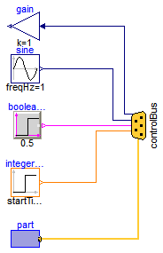
Signal bus concept
In technical systems, such as vehicles, robots or satellites, many signals are exchanged between components. In a simulation system, these signals are usually modelled by signal connections of input/output blocks. Unfortunately, the signal connection structure may become very complicated, especially for hierarchical models.
The same is also true for real technical systems. To reduce complexity and get higher flexibility, many technical systems use data buses to exchange data between components. For the same reasons, it is often better to use a "signal bus" concept also in a Modelica model. This is demonstrated at hand of this model (Modelica.Blocks.Examples.BusUsage):

The control and sub-control bus icons are provided within Modelica.Icons. In Modelica.Blocks.Examples.BusUsage_Utilities.Interfaces the buses for this example are defined. Both the "ControlBus" and the "SubControlBus" are expandable connectors that do not define any variable. For example, Interfaces.ControlBus is defined as:
expandable connector ControlBus
extends Modelica.Icons.ControlBus;
annotation (Icon(...));
end ControlBus;
Note, the "annotation" in the connector is important since the color and thickness of a connector line are taken from the first line element in the icon annotation of a connector class. Above, a small rectangle in the color of the bus is defined (and therefore this rectangle is not visible). As a result, when connecting from an instance of this connector to another connector instance, the connecting line has the color of the "ControlBus" with double width (due to "thickness=0.5").
An expandable connector is a connector where the content of the connector is constructed by the variables connected to instances of this connector. For example, if "sine.y" is connected to the "controlBus", the following menu pops-up in Dymola:

The "Add variable/New name" field allows the user to define the name of the signal on the "controlBus". When typing "realSignal1" as "New name", a connection of the form:
connect(sine.y, controlBus.realSignal1)
is generated and the "controlBus" contains the new signal "realSignal1". Modelica tools may give more support in order to list potential signals for a connection. For example, in Dymola all variables are listed in the menu that are contained in connectors which are derived by inheritance from "controlBus". Therefore, in BusUsage_Utilities.Interfaces the expected implementation of the "ControlBus" and of the "SubControlBus" are given. For example "Internal.ControlBus" is defined as:
expandable connector StandardControlBus
extends BusUsage_Utilities.Interfaces.ControlBus;
import SI = Modelica.SIunits;
SI.AngularVelocity realSignal1 "First Real signal";
SI.Velocity realSignal2 "Second Real signal";
Integer integerSignal "Integer signal";
Boolean booleanSignal "Boolean signal";
StandardSubControlBus subControlBus "Combined signal";
end StandardControlBus;
Consequently, when connecting now from "sine.y" to "controlBus", the menu looks differently:

Note, even if the signals from "Internal.StandardControlBus" are listed, these are just potential signals. The user might still add different signal names.
Extends from Modelica.Icons.Example (Icon for runnable examples).
model BusUsage "Demonstrates the usage of a signal bus" extends Modelica.Icons.Example;public Modelica.Blocks.Sources.IntegerStep integerStep( height=1, offset=2, startTime=0.5); Modelica.Blocks.Sources.BooleanStep booleanStep(startTime=0.5); Modelica.Blocks.Sources.Sine sine(freqHz=1); Modelica.Blocks.Examples.BusUsage_Utilities.Part part; Modelica.Blocks.Math.Gain gain(k=1); protected BusUsage_Utilities.Interfaces.ControlBus controlBus; equationconnect(sine.y, controlBus.realSignal1); connect(booleanStep.y, controlBus.booleanSignal); connect(integerStep.y, controlBus.integerSignal); connect(part.subControlBus, controlBus.subControlBus); connect(gain.u, controlBus.realSignal1); end BusUsage;